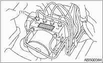
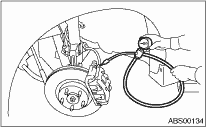
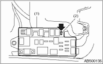
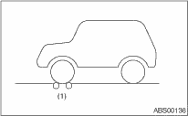
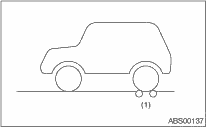

1. Check the connection and seating of the connector.
2. Check the mark used for ABSCM&H/U identification.
|
Identification mark |
Model |
|
L6 |
AT |
|
L7 |
MT |

|
(1) |
Identification mark |
1. CHECKING THE HYDRAULIC UNIT ABS OPERATION BY PRESSURE GAUGE
1. Lift up the vehicle, and remove the wheels.
2. Remove the air bleeder screws from FL and FR caliper bodies.
3. Connect two pressure gauges to FL and FR caliper bodies.
CAUTION:
• Use a pressure gauge used exclusively for brake fluid measurement.
• Do not use a pressure gauge used previously for measurement of transmission oil pressure, as the piston seal may expand and deform.
NOTE:
Wrap sealing tape around the pressure gauge.

4. Bleed air from the pressure gauge.
5. Perform ABS sequence control. 
6. When the hydraulic unit begins to work, first the FL side performs decompression, hold and compression, and then the FR side performs decompression, hold and compression.
7. Read the values indicated on the pressure gauge and check if the fluctuation of the values between decompression and compression meets the standard values. Also check whether any irregular tightness of the brake pedal can be felt.
|
Front wheel |
Rear wheel | |
|
Initial value |
3,500 kPa (35 kgf/cm2, 498 psi) |
3,500 kPa (35 kgf/cm2, 498 psi) |
|
When depressurized |
500 kPa (5 kgf/cm2, 71 psi) or less |
500 kPa (5 kgf/cm2, 71 psi) or less |
|
When pressurized |
3,500 kPa (35 kgf/cm2, 498 psi) or more |
3,500 kPa (35 kgf/cm2, 498 psi) or more |
8. Disconnect the pressure gauges from FL and FR caliper bodies.
9. Remove the air bleeder screws from RL and RR caliper bodies.
10. Install the air bleeder screws of FL and FR caliper bodies.
11. Connect two pressure gauges to RL and RR caliper bodies.
12. Bleed the air of the FL and FR caliper bodies.
13. Perform ABS sequence control.
14. When the hydraulic unit begins to work, first the RR side performs decompression, hold and compression, and then the RL side performs decompression, hold and compression.
15. Read the values indicated on the pressure gauges and check if it is within specification.
16. After checking, remove the pressure gauges from the caliper bodies.
17. Install the air bleeder screws of RL and RR caliper bodies.
18. Bleed air from the brake system.
2. CHECKING THE HYDRAULIC UNIT ABS OPERATION WITH THE BRAKE TESTER
1. In the case of AWD AT models, install a spare fuse to the FWD connector in the main fuse box to simulate FWD vehicles.

|
(1) |
Main fuse box |
|
(2) |
FWD connector |
NOTE:
Since a viscous coupling is used in the center differential on MT models, AWD circuit cut-off cannot be performed.
2. Prepare for the ABS sequence control operation.
3. Set the front wheels or rear wheels on the brake tester and set the select lever position to the “N” range.


|
(1) |
Brake tester |
4. Operate the brake tester.
5. Perform ABS sequence control.
6. When the hydraulic unit begins to work, check the following work sequence.
(1) The FL side performs decompression, hold and compression in sequence, and subsequently the FR side repeats the cycle.
(2) The RR side performs decompression, hold and compression in sequence, and the RR side repeats the same cycle next.
7. Read values indicated on the brake tester and check if the fluctuation of the values between decompression and compression meets the standard values.
|
Front wheel |
Rear wheel | |
|
Initial value |
1,000 N (100 kgf, 221 lbf) |
1,000 N (100 kgf, 221 lbf) |
|
When depressurized |
500 N (50 kgf, 110 lbf) or less |
500 N (50 kgf, 110 lbf) or less |
|
When pressurized |
1,000 N (100 kgf, 221 lbf) or more |
1,000 N (100 kgf, 221 lbf) or more |
8. After checking, press the brake pedal and check whether any irregular tightness of the brake pedal can be felt.